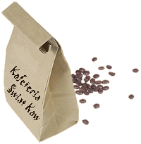

My, w³a¶ciciele i pracownicy kafeterii ¦wiat Kaw, mamy tylko jeden cel: nasz± doskona³ej jako¶ci kaw± i herbat± zaspokoiæ ca³e Twoje zapotrzebowanie na kofeinê. Oczywi¶cie, chcemy, aby¶ w naszej kafeterii nie tylko móg³ wypiæ fili¿ankê doskona³ej kawy, lecz tak¿e, aby¶ siê u nas doskonale bawi³ i czu³; wiedz jeszcze, ¿e jeste¶my jedyn± kawiarni± na ¶wiecie, która na bie¿±co monitoruje i optymalizuje poziomy kofeiny. Zatem wst±p do nas na fili¿ankê b±d¼ zamów kawê przez Internet, u¿ywaj±c do tego celu formularza Ziarnotronu, a dostaniesz swoj± ulubion± kawê, spe³niaj±c± wszystkie najwy¿sze standardy, przesy³k± kuriersk±.
A czy wspominali¶my o kofeinie? W³a¶nie ufundowali¶my laboratorium, które prowadzi badania w tym zakresie i bezp³atnie udostêpnia na WWW wszystkie informacje o kofeinie, które mog³yby Ci siê przydaæ. Zajrzyj na ich stronê: Caffeine Buzz. Je¶li chcesz zdobyæ wiêcej informacji o kawie lub je produktach, zajrzyj do nas.
"Cz³owiek, idea, fli¿anka kawy". No dobrze, ¿aden z tego palindrom, jednak w efekcie tego pomys³u mo¿na siê napisæ fili¿anki doskona³ej kawy lub herbaty. Tym cz³owiekiem jest prezes naszej kafeterii; a z tego, co wiemy, ju¿ znacie jego plan: kafeteria na ka¿dym rogu.
W ci±gu kilku lat uda³o mu siê zrealizowaæ wyznaczone cele i obecnie mo¿esz siê cieszyæ z obecno¶ci oddzia³ów sieci ¦wiat Kaw niemal wszêdzie. Oczywi¶cie najwa¿niejsz± informacj± roku jest to, i¿ pracownicy kafeterii wspierani przez czytelników niniejszej ksi±¿ki podjêli wyzwanie, by stworzyæ witrynê kafeterii. Tak¿e i ten plan siê powiód³ i nasza witryna dynamicznie siê rozwija i zaspokaja potrzeby zupe³nie nowej rzeszy klientów.
W naszej kafeterii serwujemy wiele ró¿nego rodzaju kaw, w tym miêdzy innymi: mieszankê firmow±, Mocha Cafe Latte, Cappuccino oraz ulubiony napój naszych klientów, Herbatê Chai.
Oferujemy tak¿e wiele gatunków kawy, zarówno w postaci ca³ych ziaren, jak i kawy zmielonej. W ka¿dej chwili mo¿esz zamówiæ swoj± ulubion± kawê, korzystaj±c z formularza Ziarnotronu, i radowaæ siê ni± u siebie w domu.

ZAMÓW PRZEZ INTERNET,
u¿ywaj±c formularza
ZIARNOTRONU
SZYBKA DOSTAWA
¦WIE¯A KAWA
BEZPO¦REDNIO DO DOMU
Po co czekaæ? W ka¿dej chwili mo¿esz zamawiaæ nasze doskona³e kawy przez Internet, korzystaj±c z naszego nowego, zautomatyzowanego Ziarnotronu. Jak on dzia³a? Kliknij ³±cze i wype³nij zamówienie - a ca³a reszta, czyli: palenie kawy, mielenie (je¶li sobie tego za¿yczysz), spakowanie i dostarczenie pod wskazany adres, zostanie automatycznie zrobiona!